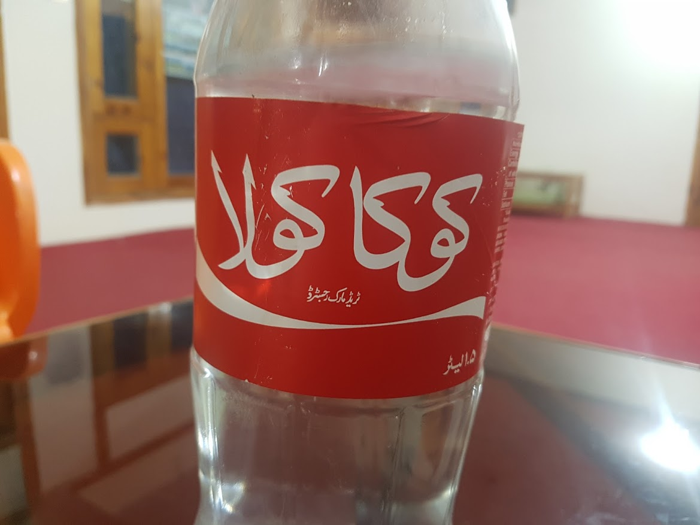

평화의 종교
2017년 06월 08일
파키스탄
어제 자기전에 심심해서 영화를 봤다. 이제 내가 볼 수 있는 영화가 몇개 남지 않았다. 만약 수백개의 영화가 있었다면 이렇게 영화 한편한편이 귀하게 느껴지지 않았을 것이다. 역시 사람은 사라지는 것을 사랑하고 귀하게 여긴다. 만약 내 부모가 내 가족이 내친구가 영원히 죽지 않는다면 우리는 그들을 사랑하지 않을지도 모른다. 왜냐하면 영원히 내 옆에 있을것이기 때문이다.
어쨋든, 그나마 몇개 남지 않은 영화 중 플라이트 93이라는 영화를 골랐다. 근데 하필이면 911테러 관련 영화였다. 다 보고 나서 거의 새벽 2시가 넘었지만 여운이 가시지 않았다. 영화 자체가 시종일관 긴장을 늦추지 않도록 잘 만들어졌기 때문이고 비행기에 탑승했던 수 많은 무고한 희생자들 때문도 있었지만, 내가 이곳에서 경험한 평화의 무슬림들이 도데체 왜 이런 일을 일으켰는지 안타까워서다. 테러범들은 역시 쿠란을 읇고 기도를 하는 장면이 계속 나왔는데, 이런 헐리웃 영화들이 모든 무슬림을 싹잡아 과격한 테러범으로 오해하게 만든다는 사실에 불편함도 느꼈다.
나는 파키스탄에와서 이슬람은 진정으로 평화를 추구하는 종교라는것을 경험했다. 수많은 무슬림들이 내게 이슬람은 평화를 상징한다고 가르쳐줬다. 그리고 전세계 대부분의 무슬림은 평화주의자라는 사실도 또한 알게 되었다. 그러나 무슬림이 911 테러를 일으킨것도 사실이다. 나는 궁금했다. 도데테 그동안 이슬람 사회에 무슨일이 있었길래 이런일이 일어난걸까. 빈 라덴이라는 인물은 도데체 어떻게 탄생 했으며 그의 조직 알카에다는 어떻게 탄생한걸까? 그리고 이런 이슬람 극단주의 집단은 어떻게 탄생한걸까. 막연히 서구 사회와의 얽히고 섥힌 역사적 사건들 때문에 무슬림의 분노가 극에 달했다는 이야기를 듣긴 했었다. 나는 더 자세히 알고 싶었다. 인터넷으로 검색을 하기 시작했다.
거기에는 상당히 복잡한 역사적 관계가 있었다. 단순히 이슬람 국가의 문제만은 아니었다. 상당부분 서구 사회가 이 사태를 부추겼다는 사실을 알게되었다. 몇가지 예를 들면 팔레스타인 나라를 빼앗은 이스라엘 국가를 지원했던 영국과 프랑스가 있었고 이것은 모든 이슬람 사회가 서구 사회에 대한 분노를 갖게한 근본적인 원인중 하나이다. 냉전시대에 소련은 아프가니스탄을 침공했다. 미국은 기회를 틈타 아스가니스탄 무슬림에게 무기와 각종 지원을 했다. 소련에 대항하기 위해서다. 그 아프가니스탄 전쟁에는 빈라덴도 참전했었다. 2005년 이란에서 발생한 이슬람 혁명으로 친 미였던 이란이 한순간에 반미 국가로 변했다. 이에 따라 미국은 이라크를 지원했다.
나무 위키나 블로그의 수많은 글을 읽다가 뒤죽박죽 정신이 없어서 관련 역사를 다룬 책 한권을 읽기로 했다. 내가 킨들로 읽을 수 있는 책은 상당히 제한적이다(구글 플레이에 있는책만 킨들에 넣어서 읽을 수 있음) 이슬람 으로 검색하면 상당히 많은 책이 나오는데 개중에는 기독교인이 쓴 별 쓰레기같은 책도 많았다. 나는 그 중에 이슬람 전사의 탄생 이라는 책을 읽기로 했다. 그리고 구매 버튼을 눌렀다. 1만원이 조금 넘는 금액. 이곳에서 는 하루 생활비의 절반되는 금액이다. 하지만 책을 구매하고 지식을 쌓고 경험을 쌓는데 드는 비용은 충분한 사용가치를 지니기 때문에 비용을 지불할 가치가 있다.
엊그제 다읽었던 인포메이션. 그리고 또 다른책을 일고 싶어졌다. 그냥 여행 다니지 말고 맨날 책만 읽고 싶기도 하다. 이슬람 전사의 탄생은 제목이 마음에 들지 않지만 이슬람 국가에서 벌어졌던 역사적 사건을 한쪽으로 치우지지 않고 잘 쓰였다고 한다. 내 두번째 이슬람 관련 책이다. 한국에 돌아가서 읽을 수도 있겠지만 이곳 이슬람 문화권 속에 있을때 읽는 것이 더 내게 크게 다가올것 같았다. 그리고 이곳 쇼그란에서 딱히 할것이 없다. 숙소 앞 테라스에 앉아서 멋진 경치를 바라보며 책읽고 글을 쓰는일 밖에 할게 없다. 너무 평화롭고 좋다.
어제 구매한 콘플레이크(260/3), 꿀(80/5), 토마토(50/3), 삶은 계란(20)으로 아침식사를 했다. 총 130루피 정도에 배부르고 나름 건강한 식단으로 먹는것이기에 앞으로 이런식으로 아침식사를 하면서 비용을 절감해도 좋을것 같았다. 돼지꼬리 히터도 있어서 전기만 들어온다면 언제든지 물을끟이고 커피를 마실 수 있다.
오늘 하루종일 방안에만 있었다. 계속 누워서 책을 봤다. 낮시간대에는 전기가 들어오지 않기 때문에 방안은 컴컴하다. 하루종일 어두운곳에만 있어서 그랬을까? 기분이 썩 상쾌하지는 않았다. 게다가 밖은 항상 번개가 친다. 무의식은 번개소리에 불안을 느끼는것 같다. 쉬더라도 햇빛을좀 씌면서 쉬어야할것 같다. 바로 앞에 테라스가 있는데 앞으로는 테라스에 나와있자.
계속 글만읽으니 지루해서 영화를 봤다. 그동안 여행중 본 영화가 손에 꼽는데 이곳에서 벌써 두개째 영화를 보고 있다. 영화 파고를 봤는데 영화 자체는 잘 만든 영화지만 살인하는 장면이 나오고 분위기 자체도 살짝 어두워서 기분이 더 안좋아졌다.
어제 만났던 레마한 아저씨의 사위인 하비브 한테 전화가 왔다. 어제 페이스북 친구를 맺었는데 페이스북 전화로 걸려왔다. 7시까지 오라고 한다. 저녁을 같이 먹자고 한다. 와우. 오늘도 저녁식사를 대접받는다. 하루종일 안에만 있으면 밖에 나가기가 엄청 귀찮다. 그래도 시간이 되어 세수를 하고 레마한 아저씨네 호텔로 갔다. 그리고 배부르게 식사도 얻어먹고 차를 마시면서 대화도 나눴다. 대부분 내가 가진 궁금증이나, 그들의 나에대한 궁금증이 관한 대화였다. 그리고 혼자 여행하는 것에대한 대화도 있었다.
그냥 60일 넘게 힘들게 여행했는데 며칠은 여기서 마음 편하게 아무것도 안하고 쉬어도 괜찮겠다는 생각이 들었다. 쇼그란은 포카라같이 할게 많은 여행자의 블랙홀도 아니고 훈자처럼 경치가 압도적이지도 않다. 그래도 나는 이곳이 상당히 마음에 들었다. 가격대에 비해 호텔도 좋았고 테라스에서 보이는 산들과 구름들 노을의 모습은 평화로웠다. 게다가 이곳은 파키스탄의 유명한 휴양지인데 사람이 없다. 그이유는 지금이 라마단 기간이기 때문이다. 라마단이 끝나면 사람들로 바글바글 한다고 한다. 라마잔에 여행하는 파키스탄이 또 이런 행운을 주었다. 아마 라마단이 아니었다면 이곳에 2일 머물고 내려갔을지도 모른다.

우루두어로 쓰여있는 코카콜라